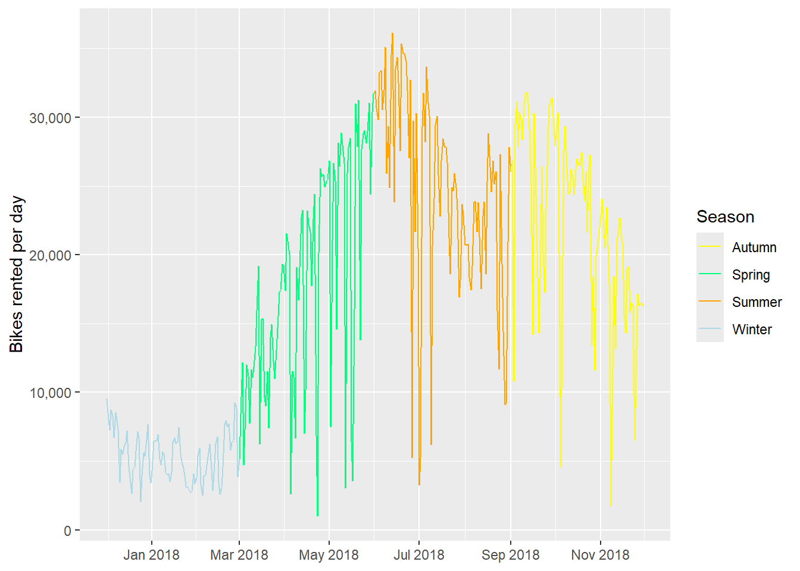
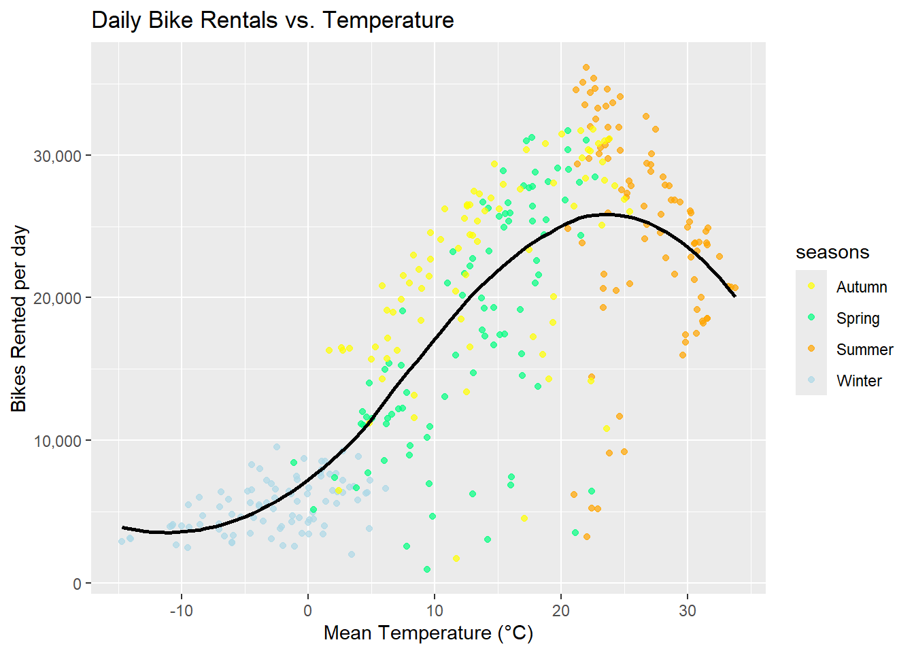

library(tidyverse)
library(lubridate)
library(rsample)
library(tidymodels)ST558_HW9_Ryan
Reading in Data
bike <- read_csv("https://www4.stat.ncsu.edu/~online/datasets/SeoulBikeData.csv",
locale = locale(encoding = "latin1")
)Rows: 8760 Columns: 14
── Column specification ────────────────────────────────────────────────────────
Delimiter: ","
chr (4): Date, Seasons, Holiday, Functioning Day
dbl (10): Rented Bike Count, Hour, Temperature(°C), Humidity(%), Wind speed ...
ℹ Use `spec()` to retrieve the full column specification for this data.
ℹ Specify the column types or set `show_col_types = FALSE` to quiet this message.bike# A tibble: 8,760 × 14
Date `Rented Bike Count` Hour `Temperature(°C)` `Humidity(%)`
<chr> <dbl> <dbl> <dbl> <dbl>
1 01/12/2017 254 0 -5.2 37
2 01/12/2017 204 1 -5.5 38
3 01/12/2017 173 2 -6 39
4 01/12/2017 107 3 -6.2 40
5 01/12/2017 78 4 -6 36
6 01/12/2017 100 5 -6.4 37
7 01/12/2017 181 6 -6.6 35
8 01/12/2017 460 7 -7.4 38
9 01/12/2017 930 8 -7.6 37
10 01/12/2017 490 9 -6.5 27
# ℹ 8,750 more rows
# ℹ 9 more variables: `Wind speed (m/s)` <dbl>, `Visibility (10m)` <dbl>,
# `Dew point temperature(°C)` <dbl>, `Solar Radiation (MJ/m2)` <dbl>,
# `Rainfall(mm)` <dbl>, `Snowfall (cm)` <dbl>, Seasons <chr>, Holiday <chr>,
# `Functioning Day` <chr>EDA
Checking Data
1. Missingness
colSums(is.na(bike)) Date Rented Bike Count Hour
0 0 0
Temperature(°C) Humidity(%) Wind speed (m/s)
0 0 0
Visibility (10m) Dew point temperature(°C) Solar Radiation (MJ/m2)
0 0 0
Rainfall(mm) Snowfall (cm) Seasons
0 0 0
Holiday Functioning Day
0 0 2. Column types and values
glimpse(bike)Rows: 8,760
Columns: 14
$ Date <chr> "01/12/2017", "01/12/2017", "01/12/2017", …
$ `Rented Bike Count` <dbl> 254, 204, 173, 107, 78, 100, 181, 460, 930…
$ Hour <dbl> 0, 1, 2, 3, 4, 5, 6, 7, 8, 9, 10, 11, 12, …
$ `Temperature(°C)` <dbl> -5.2, -5.5, -6.0, -6.2, -6.0, -6.4, -6.6, …
$ `Humidity(%)` <dbl> 37, 38, 39, 40, 36, 37, 35, 38, 37, 27, 24…
$ `Wind speed (m/s)` <dbl> 2.2, 0.8, 1.0, 0.9, 2.3, 1.5, 1.3, 0.9, 1.…
$ `Visibility (10m)` <dbl> 2000, 2000, 2000, 2000, 2000, 2000, 2000, …
$ `Dew point temperature(°C)` <dbl> -17.6, -17.6, -17.7, -17.6, -18.6, -18.7, …
$ `Solar Radiation (MJ/m2)` <dbl> 0.00, 0.00, 0.00, 0.00, 0.00, 0.00, 0.00, …
$ `Rainfall(mm)` <dbl> 0, 0, 0, 0, 0, 0, 0, 0, 0, 0, 0, 0, 0, 0, …
$ `Snowfall (cm)` <dbl> 0, 0, 0, 0, 0, 0, 0, 0, 0, 0, 0, 0, 0, 0, …
$ Seasons <chr> "Winter", "Winter", "Winter", "Winter", "W…
$ Holiday <chr> "No Holiday", "No Holiday", "No Holiday", …
$ `Functioning Day` <chr> "Yes", "Yes", "Yes", "Yes", "Yes", "Yes", …Summary stats for numeric columns
bike |>
select(where(is.numeric)) |>
summary() Rented Bike Count Hour Temperature(°C) Humidity(%)
Min. : 0.0 Min. : 0.00 Min. :-17.80 Min. : 0.00
1st Qu.: 191.0 1st Qu.: 5.75 1st Qu.: 3.50 1st Qu.:42.00
Median : 504.5 Median :11.50 Median : 13.70 Median :57.00
Mean : 704.6 Mean :11.50 Mean : 12.88 Mean :58.23
3rd Qu.:1065.2 3rd Qu.:17.25 3rd Qu.: 22.50 3rd Qu.:74.00
Max. :3556.0 Max. :23.00 Max. : 39.40 Max. :98.00
Wind speed (m/s) Visibility (10m) Dew point temperature(°C)
Min. :0.000 Min. : 27 Min. :-30.600
1st Qu.:0.900 1st Qu.: 940 1st Qu.: -4.700
Median :1.500 Median :1698 Median : 5.100
Mean :1.725 Mean :1437 Mean : 4.074
3rd Qu.:2.300 3rd Qu.:2000 3rd Qu.: 14.800
Max. :7.400 Max. :2000 Max. : 27.200
Solar Radiation (MJ/m2) Rainfall(mm) Snowfall (cm)
Min. :0.0000 Min. : 0.0000 Min. :0.00000
1st Qu.:0.0000 1st Qu.: 0.0000 1st Qu.:0.00000
Median :0.0100 Median : 0.0000 Median :0.00000
Mean :0.5691 Mean : 0.1487 Mean :0.07507
3rd Qu.:0.9300 3rd Qu.: 0.0000 3rd Qu.:0.00000
Max. :3.5200 Max. :35.0000 Max. :8.80000 Unique values for categorical variables:
bike |>
select(where(is.character), -Date) |>
map(unique)$Seasons
[1] "Winter" "Spring" "Summer" "Autumn"
$Holiday
[1] "No Holiday" "Holiday"
$`Functioning Day`
[1] "Yes" "No" 3. Convert date
bike <- bike |>
mutate(Date = dmy(Date))
sum(is.na(bike$Date))[1] 0range(bike$Date)[1] "2017-12-01" "2018-11-30"4. Convert to factors
bike <- bike |>
mutate(across(c(Seasons, Holiday, `Functioning Day`), as.factor))
bike# A tibble: 8,760 × 14
Date `Rented Bike Count` Hour `Temperature(°C)` `Humidity(%)`
<date> <dbl> <dbl> <dbl> <dbl>
1 2017-12-01 254 0 -5.2 37
2 2017-12-01 204 1 -5.5 38
3 2017-12-01 173 2 -6 39
4 2017-12-01 107 3 -6.2 40
5 2017-12-01 78 4 -6 36
6 2017-12-01 100 5 -6.4 37
7 2017-12-01 181 6 -6.6 35
8 2017-12-01 460 7 -7.4 38
9 2017-12-01 930 8 -7.6 37
10 2017-12-01 490 9 -6.5 27
# ℹ 8,750 more rows
# ℹ 9 more variables: `Wind speed (m/s)` <dbl>, `Visibility (10m)` <dbl>,
# `Dew point temperature(°C)` <dbl>, `Solar Radiation (MJ/m2)` <dbl>,
# `Rainfall(mm)` <dbl>, `Snowfall (cm)` <dbl>, Seasons <fct>, Holiday <fct>,
# `Functioning Day` <fct>5. Rename variables
bike_data <- bike |>
rename(
date = Date,
bike_count = `Rented Bike Count`,
hour = Hour,
temp = starts_with("Temperature"),
humidity = `Humidity(%)`,
wind_speed = `Wind speed (m/s)`,
visibility = `Visibility (10m)`,
dew_point_temp = starts_with("Dew point"),
solar_radiation = `Solar Radiation (MJ/m2)`,
rainfall = `Rainfall(mm)`,
snowfall = `Snowfall (cm)`,
seasons = Seasons,
holiday = Holiday,
functioning_day = `Functioning Day`
)
names(bike_data) [1] "date" "bike_count" "hour" "temp"
[5] "humidity" "wind_speed" "visibility" "dew_point_temp"
[9] "solar_radiation" "rainfall" "snowfall" "seasons"
[13] "holiday" "functioning_day"6. Summary stats
# Function to summarize by given grouping variables
bike_summary <- function(data, ...) {
data |>
group_by(...) |>
summarize(
n = n(),
total = sum(bike_count),
mean = mean(bike_count),
sd = sd(bike_count),
min = min(bike_count),
median = median(bike_count),
max = max(bike_count),
.groups = "drop"
)
}
bike_data |> bike_summary()# A tibble: 1 × 7
n total mean sd min median max
<int> <dbl> <dbl> <dbl> <dbl> <dbl> <dbl>
1 8760 6172314 705. 645. 0 504. 3556bike_data |> bike_summary(seasons)# A tibble: 4 × 8
seasons n total mean sd min median max
<fct> <int> <dbl> <dbl> <dbl> <dbl> <dbl> <dbl>
1 Autumn 2184 1790002 820. 651. 0 764. 3298
2 Spring 2208 1611909 730. 622. 0 583 3251
3 Summer 2208 2283234 1034. 690. 9 906. 3556
4 Winter 2160 487169 226. 150. 3 203 937bike_data |> bike_summary(holiday)# A tibble: 2 × 8
holiday n total mean sd min median max
<fct> <int> <dbl> <dbl> <dbl> <dbl> <dbl> <dbl>
1 Holiday 432 215895 500. 571. 0 240 2400
2 No Holiday 8328 5956419 715. 647. 0 524. 3556bike_data |> bike_summary(functioning_day)# A tibble: 2 × 8
functioning_day n total mean sd min median max
<fct> <int> <dbl> <dbl> <dbl> <dbl> <dbl> <dbl>
1 No 295 0 0 0 0 0 0
2 Yes 8465 6172314 729. 642. 2 542 3556When functioning_day is zero, the bike rental total is 0 since no bikes are rented if the system isn’t functioning. We can drop these to only focus on functioning hours
bike_data <- bike_data |>
filter(functioning_day == "Yes") |>
select(-functioning_day)
nrow(bike_data)[1] 84657. Summarize across hours
bike_daily <- bike_data |>
group_by(date, seasons, holiday) |>
summarize(
across(c(bike_count, rainfall, snowfall), sum),
across(c(temp, humidity, wind_speed, visibility, dew_point_temp, solar_radiation), mean),
.groups = "drop"
)
bike_daily# A tibble: 353 × 12
date seasons holiday bike_count rainfall snowfall temp humidity
<date> <fct> <fct> <dbl> <dbl> <dbl> <dbl> <dbl>
1 2017-12-01 Winter No Holiday 9539 0 0 -2.45 45.9
2 2017-12-02 Winter No Holiday 8523 0 0 1.32 62.0
3 2017-12-03 Winter No Holiday 7222 4 0 4.88 81.5
4 2017-12-04 Winter No Holiday 8729 0.1 0 -0.304 52.5
5 2017-12-05 Winter No Holiday 8307 0 0 -4.46 36.4
6 2017-12-06 Winter No Holiday 6669 1.3 8.6 0.0458 70.8
7 2017-12-07 Winter No Holiday 8549 0 10.4 1.09 67.5
8 2017-12-08 Winter No Holiday 8032 0 0 -3.82 41.8
9 2017-12-09 Winter No Holiday 7233 0 0 -0.846 46
10 2017-12-10 Winter No Holiday 3453 4.1 32.5 1.19 69.7
# ℹ 343 more rows
# ℹ 4 more variables: wind_speed <dbl>, visibility <dbl>, dew_point_temp <dbl>,
# solar_radiation <dbl>8. Summaries from daily data
bike_daily |>
select(where(is.numeric)) |>
summary() bike_count rainfall snowfall temp
Min. : 977 Min. : 0.000 Min. : 0.000 Min. :-14.738
1st Qu.: 6967 1st Qu.: 0.000 1st Qu.: 0.000 1st Qu.: 3.304
Median :18563 Median : 0.000 Median : 0.000 Median : 13.738
Mean :17485 Mean : 3.576 Mean : 1.863 Mean : 12.776
3rd Qu.:26285 3rd Qu.: 0.500 3rd Qu.: 0.000 3rd Qu.: 22.592
Max. :36149 Max. :95.500 Max. :78.700 Max. : 33.742
humidity wind_speed visibility dew_point_temp
Min. :22.25 Min. :0.6625 Min. : 214.3 Min. :-27.750
1st Qu.:47.58 1st Qu.:1.3042 1st Qu.:1087.0 1st Qu.: -5.188
Median :57.17 Median :1.6583 Median :1557.8 Median : 4.612
Mean :58.17 Mean :1.7261 Mean :1434.0 Mean : 3.954
3rd Qu.:67.71 3rd Qu.:1.9542 3rd Qu.:1874.3 3rd Qu.: 14.921
Max. :95.88 Max. :4.0000 Max. :2000.0 Max. : 25.038
solar_radiation
Min. :0.02917
1st Qu.:0.28333
Median :0.56500
Mean :0.56773
3rd Qu.:0.82000
Max. :1.21667 bike_daily |> bike_summary(seasons)# A tibble: 4 × 8
seasons n total mean sd min median max
<fct> <int> <dbl> <dbl> <dbl> <dbl> <dbl> <dbl>
1 Autumn 81 1790002 22099. 6711. 1721 23350 31809
2 Spring 90 1611909 17910. 8357. 977 17590 31681
3 Summer 92 2283234 24818. 7297. 3231 25572. 36149
4 Winter 90 487169 5413. 1808. 2014 5498 9539bike_daily |> bike_summary(holiday)# A tibble: 2 × 8
holiday n total mean sd min median max
<fct> <int> <dbl> <dbl> <dbl> <dbl> <dbl> <dbl>
1 Holiday 17 215895 12700. 10504. 2014 7184 30498
2 No Holiday 336 5956419 17727. 9862. 977 19104. 36149bike_daily |> bike_summary(seasons, holiday)# A tibble: 8 × 9
seasons holiday n total mean sd min median max
<fct> <fct> <int> <dbl> <dbl> <dbl> <dbl> <dbl> <dbl>
1 Autumn Holiday 4 91018 22754. 5642. 17259 21705 30349
2 Autumn No Holiday 77 1698984 22065. 6792. 1721 23472 31809
3 Spring Holiday 3 45742 15247. 10917. 5132 13790 26820
4 Spring No Holiday 87 1566167 18002. 8322. 977 17730 31681
5 Summer Holiday 2 49063 24532. 8438. 18565 24532. 30498
6 Summer No Holiday 90 2234171 24824. 7324. 3231 25572. 36149
7 Winter Holiday 8 30072 3759 1561. 2014 3454. 7184
8 Winter No Holiday 82 457097 5574. 1757. 2487 5609 9539Correlations:
bike_daily |>
select(where(is.numeric)) |>
cor() |>
round(2) bike_count rainfall snowfall temp humidity wind_speed
bike_count 1.00 -0.24 -0.27 0.75 0.04 -0.19
rainfall -0.24 1.00 -0.02 0.14 0.53 -0.10
snowfall -0.27 -0.02 1.00 -0.27 0.07 0.02
temp 0.75 0.14 -0.27 1.00 0.40 -0.26
humidity 0.04 0.53 0.07 0.40 1.00 -0.23
wind_speed -0.19 -0.10 0.02 -0.26 -0.23 1.00
visibility 0.17 -0.22 -0.10 0.00 -0.56 0.21
dew_point_temp 0.65 0.26 -0.21 0.96 0.63 -0.29
solar_radiation 0.74 -0.32 -0.23 0.55 -0.27 0.10
visibility dew_point_temp solar_radiation
bike_count 0.17 0.65 0.74
rainfall -0.22 0.26 -0.32
snowfall -0.10 -0.21 -0.23
temp 0.00 0.96 0.55
humidity -0.56 0.63 -0.27
wind_speed 0.21 -0.29 0.10
visibility 1.00 -0.15 0.27
dew_point_temp -0.15 1.00 0.38
solar_radiation 0.27 0.38 1.00Plots:
Plot of daily bike rentals over the year:
season_colors <- c(
Winter = "lightblue",
Spring = "springgreen",
Summer = "orange",
Autumn = "yellow"
)
ggplot(bike_daily, aes(date, bike_count, color = seasons)) +
geom_line(aes(group = 1), linewidth = 0.5) +
scale_color_manual(values = season_colors) +
scale_y_continuous(labels = scales::label_comma()) +
scale_x_date(date_breaks = "2 months", date_labels = "%b %Y") +
labs(x = NULL, y = "Bikes rented per day", color = "Season")
Bike rentals by season and holiday
ggplot(bike_daily, aes(seasons, bike_count, color = seasons)) +
geom_boxplot() +
geom_jitter(width = 0.15, height = 0, alpha = 0.5, size = 1.5) +
facet_wrap(~ holiday) +
scale_color_manual(values = season_colors, guide = "none") +
scale_y_continuous(labels = scales::label_comma()) +
labs(x = NULL, y = "Bikes rented per day")
Daily bike rentals with temperature
ggplot(bike_daily, aes(temp, bike_count)) +
geom_point(aes(color = seasons), alpha = 0.7) +
geom_smooth(method = "loess", se = FALSE, color = "black") +
scale_color_manual(values = season_colors) +
scale_y_continuous(labels = scales::label_comma()) +
labs(
title = "Daily Bike Rentals vs. Temperature",
x = "Mean Temperature (°C)", y = "Bikes Rented per day")`geom_smooth()` using formula = 'y ~ x'
Bike rentals with Solar radiation
ggplot(bike_daily, aes(solar_radiation, bike_count)) +
geom_point(alpha = 0.5, color = "orange") +
labs(
title = "Daily Bike Rentals vs. Solar Radiation",
x = "Solar Radiation (MJ/m^2)", y = "Bikes Rented per day")
Split the Data
set.seed(44)
bike_split <- rsample::initial_split(bike_daily, prop = 0.75, strata = "seasons")
bike_train <- training(bike_split)
bike_test <- testing(bike_split)